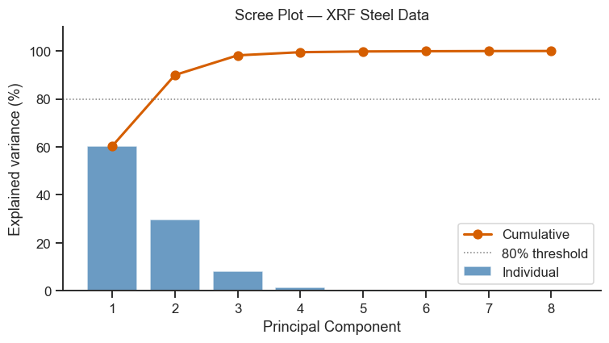
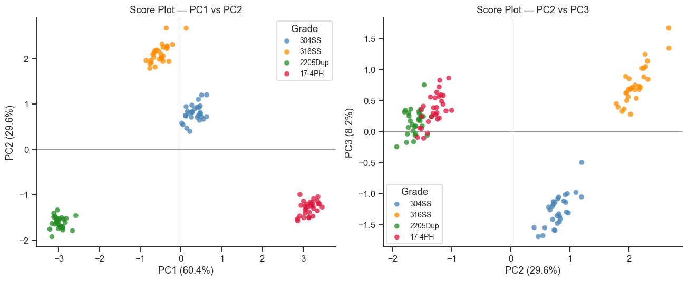
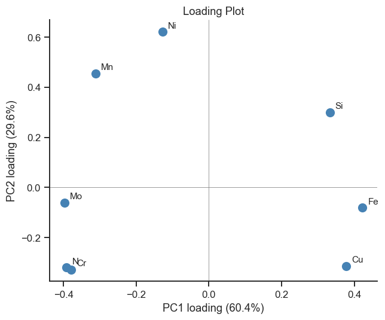
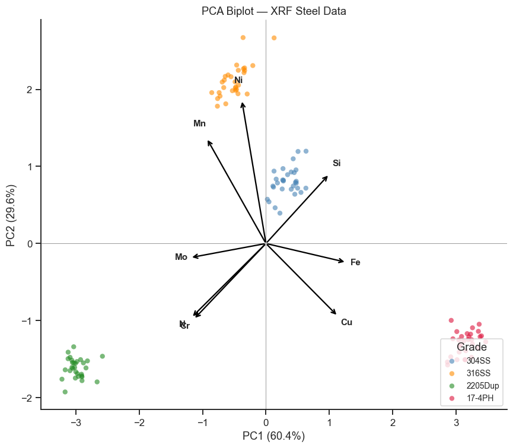

12. Principal Component Analysis (PCA)#
PCA finds the directions of maximum variance in a high-dimensional dataset and projects the data onto a lower-dimensional space while retaining as much information as possible.
Topics
Theory: covariance matrix, eigenvectors, and eigenvalues
PCA with scikit-learn
Scree plot and explained variance
Score plot (samples in PC space)
Loading plot and biplot
Case study: XRF multi-element analysis of stainless steels
import numpy as np
import pandas as pd
import matplotlib.pyplot as plt
import matplotlib.patches as mpatches
import seaborn as sns
from sklearn.preprocessing import StandardScaler
from sklearn.decomposition import PCA
sns.set_theme(style='ticks', palette='colorblind')
plt.rcParams.update({'figure.dpi': 110, 'font.size': 11})
rng = np.random.default_rng(88)
12.1 Generate XRF Dataset#
Simulated XRF elemental analysis (wt%) of 120 steel samples from four grades: 304SS, 316SS, 2205 Duplex, and 17-4 PH.
elements = ['Fe', 'Cr', 'Ni', 'Mo', 'Mn', 'Si', 'Cu', 'N']
# Mean compositions per grade (wt%), loosely based on nominal values
grade_comp = {
'304SS': [70.5, 18.2, 8.1, 0.3, 1.6, 0.5, 0.1, 0.05],
'316SS': [65.8, 16.5, 10.2, 2.2, 1.8, 0.6, 0.1, 0.05],
'2205Dup': [64.0, 22.5, 5.5, 3.2, 1.5, 0.4, 0.1, 0.18],
'17-4PH': [73.0, 16.0, 4.2, 0.3, 0.8, 0.6, 3.5, 0.03],
}
grade_std = np.array([0.4, 0.2, 0.15, 0.05, 0.08, 0.04, 0.03, 0.005])
rows, labels = [], []
n_per_grade = 30
for grade, comps in grade_comp.items():
X = rng.multivariate_normal(comps, np.diag(grade_std**2), n_per_grade)
rows.append(X)
labels.extend([grade] * n_per_grade)
X_raw = np.vstack(rows)
df_xrf = pd.DataFrame(X_raw, columns=elements)
df_xrf['Grade'] = labels
print('Dataset shape:', df_xrf.shape)
df_xrf.groupby('Grade')[elements].mean().round(2)
Dataset shape: (120, 9)
| Fe | Cr | Ni | Mo | Mn | Si | Cu | N | |
|---|---|---|---|---|---|---|---|---|
| Grade | ||||||||
| 17-4PH | 72.91 | 16.06 | 4.18 | 0.31 | 0.81 | 0.6 | 3.49 | 0.03 |
| 2205Dup | 64.06 | 22.54 | 5.52 | 3.22 | 1.49 | 0.4 | 0.09 | 0.18 |
| 304SS | 70.58 | 18.13 | 8.10 | 0.30 | 1.61 | 0.5 | 0.11 | 0.05 |
| 316SS | 65.73 | 16.46 | 10.22 | 2.19 | 1.79 | 0.6 | 0.10 | 0.05 |
12.2 Preprocessing: Mean-Centering and Scaling#
PCA looks for the directions of largest spread in the data — but “largest” is only meaningful once every variable is measured on a comparable scale. Fe here ranges over tens of wt%, while N ranges over hundredths of a wt%; if you fed the raw numbers straight into PCA, Fe’s much bigger raw numbers would dominate “variance” purely because of its units, drowning out N even if N is chemically just as informative for telling grades apart.
Always standardise (zero mean, unit variance) before PCA unless all variables are already on the same scale — this is the same rescaling principle as coding variables in Part V, just applied here so that every element gets an equal vote before PCA decides which directions matter most.
X = df_xrf[elements].values
scaler = StandardScaler()
X_scaled = scaler.fit_transform(X)
print('After scaling:')
print(f' Mean per variable: {X_scaled.mean(axis=0).round(4)}')
print(f' Std per variable: {X_scaled.std(axis=0).round(4)}')
After scaling:
Mean per variable: [ 0. -0. -0. 0. 0. -0. 0. 0.]
Std per variable: [1. 1. 1. 1. 1. 1. 1. 1.]
12.3 Fit PCA and Explained Variance#
Fitting PCA finds the natural axes of this 8-element dataset (Section 3 of the theory page — the eigenvectors of the covariance matrix), ranked by how much of the total spread each one captures. The scree plot below shows exactly that ranking: with luck (and real chemistry, where elements are added together deliberately rather than independently), the first two or three components will already capture almost all the useful structure, letting you go from 8 numbers per sample down to 2-3 without losing much.
pca = PCA()
scores = pca.fit_transform(X_scaled)
explained = pca.explained_variance_ratio_
cumulative = np.cumsum(explained)
print('Explained variance per PC:')
for i, (ev, cum) in enumerate(zip(explained, cumulative), 1):
bar = '█' * int(ev * 40)
print(f' PC{i}: {ev*100:5.1f}% (cumulative: {cum*100:5.1f}%) {bar}')
fig, ax = plt.subplots(figsize=(7, 4))
ax.bar(range(1, len(explained)+1), explained*100, color='steelblue', alpha=0.8, label='Individual')
ax.plot(range(1, len(explained)+1), cumulative*100, 'ro-', lw=2, ms=7, label='Cumulative')
ax.axhline(80, color='gray', ls=':', lw=1, label='80% threshold')
ax.set_xlabel('Principal Component')
ax.set_ylabel('Explained variance (%)')
ax.set_title('Scree Plot — XRF Steel Data')
ax.legend()
ax.set_ylim(0, 110)
sns.despine(ax=ax)
plt.tight_layout()
plt.show()
Explained variance per PC:
PC1: 60.4% (cumulative: 60.4%) ████████████████████████
PC2: 29.6% (cumulative: 90.0%) ███████████
PC3: 8.2% (cumulative: 98.2%) ███
PC4: 1.3% (cumulative: 99.5%)
PC5: 0.3% (cumulative: 99.8%)
PC6: 0.1% (cumulative: 99.9%)
PC7: 0.1% (cumulative: 100.0%)
PC8: 0.0% (cumulative: 100.0%)

Take-home message
PC1 and PC2 together already capture 90.0% of the total variance (60.4% + 29.6%), and adding PC3 pushes that to 98.2% — eight correlated elemental measurements collapse to essentially two or three numbers per specimen with almost no information loss, exactly the payoff Section 12.3’s introduction promised.
The steep drop from PC1/PC2 to PC3 onward (8.2% and falling) is the numeric version of an “elbow” — by PC4 each further component adds barely over 1%, which is why the score and loading plots below only bother showing the first two or three components at all.
Interpreting the Scree Plot#
The scree plot shows how much variance each principal component captures:
Bar height (individual %) — how much new information each component adds. A steep drop between PC1 and PC2 indicates that PC1 dominates the variance structure.
Cumulative line (red) — read off how many components are needed to retain ≥ 80 % of total variance, marked here by the grey dotted threshold line. This is the most practical stopping criterion for a quick look.
Two other stopping rules exist and are worth knowing, though this particular plot doesn’t draw them: the Kaiser criterion (keep components with eigenvalue > 1 — a quick rule of thumb that can over-retain components in large datasets) and parallel analysis (compare each observed eigenvalue against the eigenvalues random, uncorrelated data of the same size would produce, keeping only components that clear that noise baseline). Both are demonstrated with an actual plotted line in Notebook 14 (Factor Analysis) §14.3 and Notebook 16 (Live Tutorial 1) §16.6.
In this steel XRF example the first two PCs typically capture > 90 % of variance because the eight elements co-vary strongly across grades.
12.4 Score Plot — Samples in PC Space#
grades = df_xrf['Grade'].values
grade_list = list(grade_comp.keys())
colors_map = dict(zip(grade_list, ['steelblue','darkorange','forestgreen','crimson']))
point_colors = [colors_map[g] for g in grades]
fig, axes = plt.subplots(1, 2, figsize=(12, 5))
# PC1 vs PC2
ax = axes[0]
for grade, color in colors_map.items():
mask = grades == grade
ax.scatter(scores[mask, 0], scores[mask, 1], c=color,
label=grade, s=40, alpha=0.75, edgecolors='none')
ax.set_xlabel(f'PC1 ({explained[0]*100:.1f}%)')
ax.set_ylabel(f'PC2 ({explained[1]*100:.1f}%)')
ax.set_title('Score Plot — PC1 vs PC2')
ax.legend(title='Grade', fontsize=9)
ax.axhline(0, color='gray', lw=0.5)
ax.axvline(0, color='gray', lw=0.5)
sns.despine(ax=ax)
# PC2 vs PC3
ax = axes[1]
for grade, color in colors_map.items():
mask = grades == grade
ax.scatter(scores[mask, 1], scores[mask, 2], c=color,
label=grade, s=40, alpha=0.75, edgecolors='none')
ax.set_xlabel(f'PC2 ({explained[1]*100:.1f}%)')
ax.set_ylabel(f'PC3 ({explained[2]*100:.1f}%)')
ax.set_title('Score Plot — PC2 vs PC3')
ax.legend(title='Grade', fontsize=9)
ax.axhline(0, color='gray', lw=0.5)
ax.axvline(0, color='gray', lw=0.5)
sns.despine(ax=ax)
plt.tight_layout()
plt.show()

Take-home message
All four grades separate cleanly in the PC1–PC2 panel, including 304SS and 316SS: they sit close together on PC1 (both near zero, a narrow overlap) but split completely on PC2 (304SS ≈0.4–1.2, 316SS ≈1.8–2.7 — no overlap at all). Both being austenitic grades makes them similar overall, but “similar” doesn’t mean “indistinguishable” — the difference between them just happens to show up on a different axis than the one separating them from the other two grades.
2205 Duplex and 17-4PH sit at the two extreme ends of PC1 (roughly −2.9 and +3.2), clearly apart from each other and from both austenitic grades — consistent with their distinctly different roles (duplex stainless vs. precipitation-hardening steel).
Section 12.5’s loading plot explains why 304SS and 316SS split along PC2 specifically: PC2 is dominated by Ni and Mn, and 316SS’s higher Ni (10.2 vs. 8.1 wt%) and Mn (1.8 vs. 1.6 wt%) content pushes it further along that axis than 304SS — a real compositional difference, not overlap that needs a PC2–PC3 or LDA follow-up to resolve.
Interpreting the Score Plot#
Each point represents one steel specimen projected into the space of the first three PCs:
Tight clusters with clear separation mean the PCA has found compositional differences that reliably distinguish grades. Overlapping clusters indicate similar compositions — those grades would be hard to classify by composition alone.
Axis meaning — the significance of each axis is read from the loading plot (next section). If Cr loads heavily on PC1, the horizontal spread in the score plot mainly reflects Cr variation.
Outliers — isolated points far from their grade cluster warrant investigation: they may indicate measurement drift, sample contamination, or mislabelling.
PC1 vs PC2 vs PC3 — compare both panels. Structure that is invisible in one projection may emerge in another. If both panels show good separation, the first three PCs fully encode the grade information.
12.5 Loading Plot and Biplot#
Loadings tell you how much each original variable contributes to each PC.
A biplot overlays samples (scores) and variables (loadings) in the same space.
loadings = pca.components_.T # shape (n_variables, n_components)
# Loading plot
fig, ax = plt.subplots(figsize=(6, 5))
ax.scatter(loadings[:, 0], loadings[:, 1], color='steelblue', s=80, zorder=5)
for i, elem in enumerate(elements):
ax.annotate(elem, (loadings[i, 0], loadings[i, 1]),
textcoords='offset points', xytext=(6, 4), fontsize=10)
ax.axhline(0, color='gray', lw=0.5)
ax.axvline(0, color='gray', lw=0.5)
ax.set_xlabel(f'PC1 loading ({explained[0]*100:.1f}%)')
ax.set_ylabel(f'PC2 loading ({explained[1]*100:.1f}%)')
ax.set_title('Loading Plot')
sns.despine(ax=ax)
plt.tight_layout()
plt.show()

# ── Biplot ────────────────────────────────────────────────────────────────────
scale = 3.0 # scale factor to make arrows visible
fig, ax = plt.subplots(figsize=(8, 7))
# Scores
for grade, color in colors_map.items():
mask = grades == grade
ax.scatter(scores[mask, 0], scores[mask, 1], c=color,
label=grade, s=30, alpha=0.6, edgecolors='none')
# Loading arrows
for i, elem in enumerate(elements):
ax.annotate('', xy=(loadings[i, 0]*scale, loadings[i, 1]*scale),
xytext=(0, 0),
arrowprops=dict(arrowstyle='->', color='black', lw=1.5))
ax.text(loadings[i, 0]*scale*1.12, loadings[i, 1]*scale*1.12,
elem, fontsize=10, fontweight='bold', ha='center')
ax.axhline(0, color='gray', lw=0.5)
ax.axvline(0, color='gray', lw=0.5)
ax.set_xlabel(f'PC1 ({explained[0]*100:.1f}%)')
ax.set_ylabel(f'PC2 ({explained[1]*100:.1f}%)')
ax.set_title('PCA Biplot — XRF Steel Data')
ax.legend(title='Grade', fontsize=9, loc='lower right')
sns.despine(ax=ax)
plt.tight_layout()
plt.show()

Take-home message
The loading plot shows Fe (+0.42) and Cu (+0.38) pulling PC1 positive, while Mo (−0.40), N (−0.39), and Cr (−0.38) pull it negative — PC1 is essentially “Fe/Cu-rich vs. Cr/Mo/N-rich,” which is exactly the axis that separates 17-4PH (high Cu, low Cr/Mo/N) from 2205 Duplex (the reverse) in the score plot above.
PC2 is dominated by Ni (+0.62) and Mn (+0.45) — the axis that mainly separates the higher-Ni austenitic grades (304SS, 316SS) from 2205 Duplex and 17-4PH, matching the vertical separation visible in the score plot.
In the biplot, the Cr and Mo arrows point in nearly the same direction — a small angle between two loading arrows means those elements are positively correlated across this dataset (chemically sensible: both are added together in duplex and high-alloy grades), exactly the angle-reading rule the interpretation note above describes, now with a real example.
Interpreting the Biplot#
The biplot combines the score plot and the loading plot in a single figure:
Arrows (loadings) point in the direction of increasing concentration of each element. A long arrow means that element varies substantially and contributes strongly to these two PCs.
Arrow direction vs samples — samples located in the direction an arrow points have high concentrations of that element. For example, if the Mo arrow points toward the 316SS cluster, 316SS specimens have elevated Mo.
Angle between arrows — a small angle (< 90°) between two element arrows indicates a positive correlation between those elements across the dataset; an angle > 90° indicates a negative correlation.
Arrow length — short arrows mean that element has little influence on PC1/PC2; its variance may be captured by higher PCs instead.
Score clusters — interpret as in the score plot above; the biplot simply adds the variable context.
Hotelling T²: Compute the Hotelling T² statistic for each sample using the first 3 PCs. Identify any samples above the 95% control limit (\(T^2_{\text{crit}} = F_{\alpha, p, n-p} \cdot p(n-1)/(n-p)\)).
Effect of scaling: Re-run PCA on the unscaled
X_raw. Compare the scree plot and score plot with the scaled version. Why does Fe dominate PC1 when unscaled?3-D score plot: Use Plotly to create an interactive 3-D scatter plot of PC1, PC2, and PC3. Colour the points by grade.